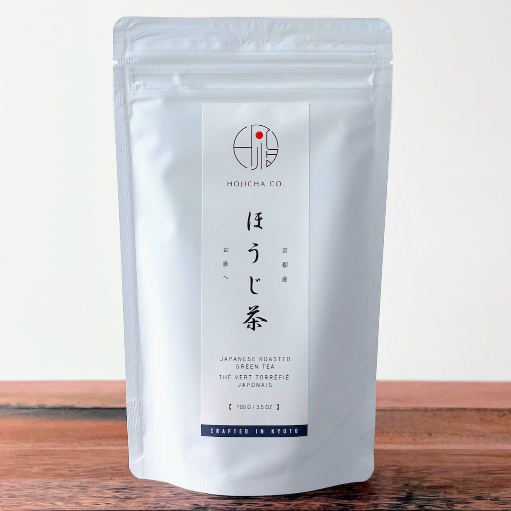
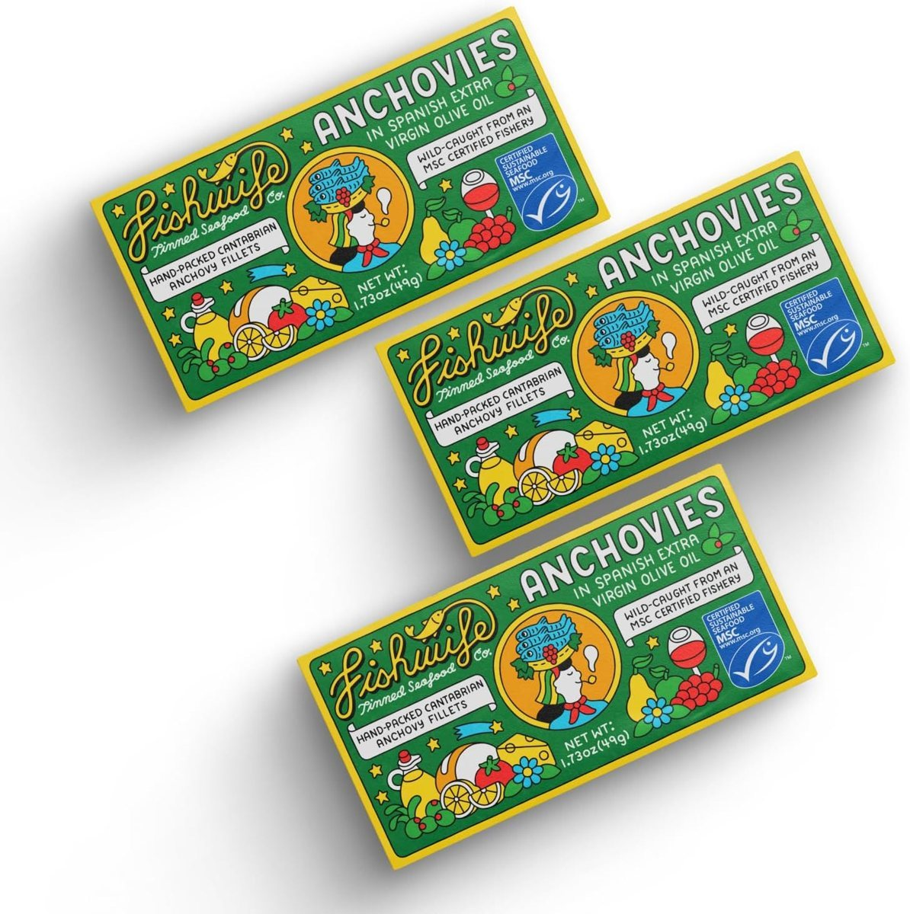
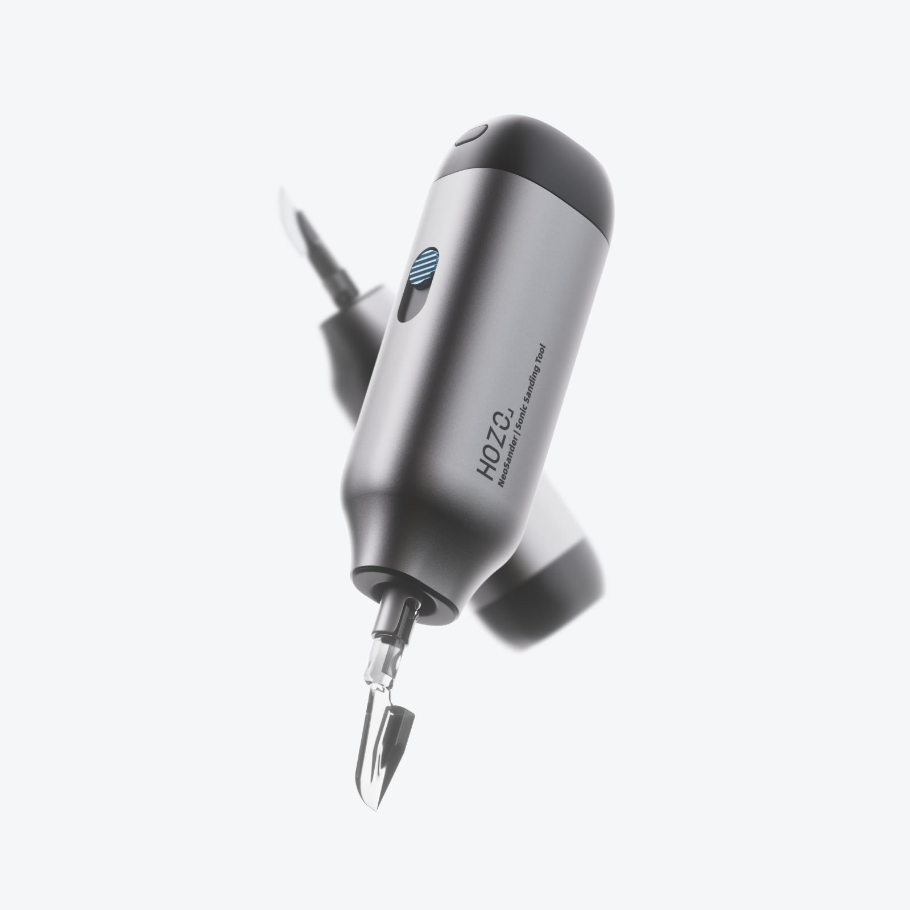
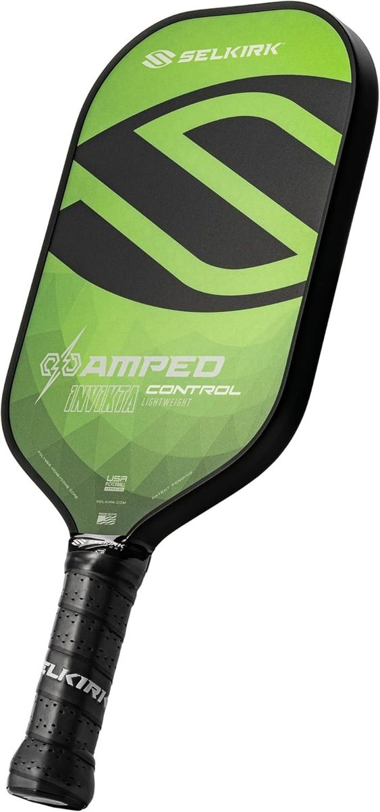
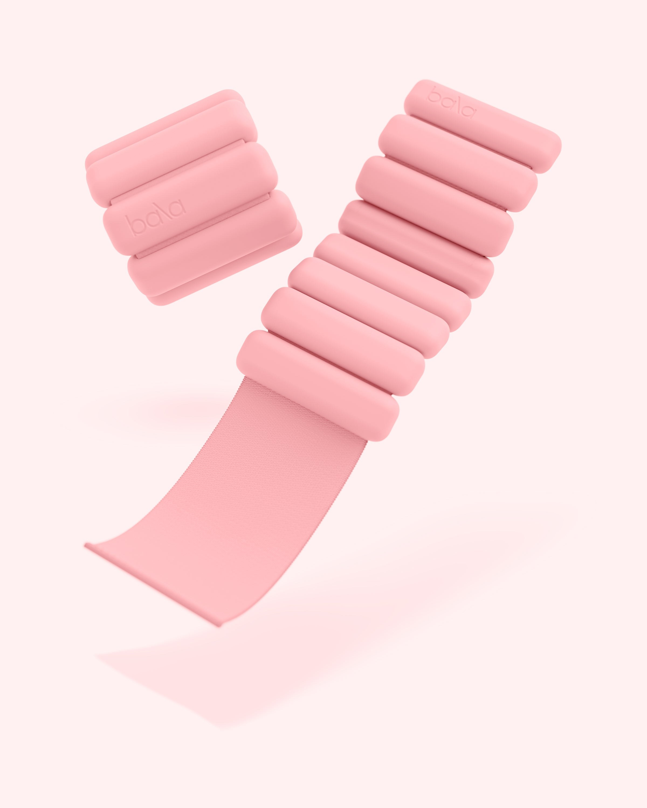
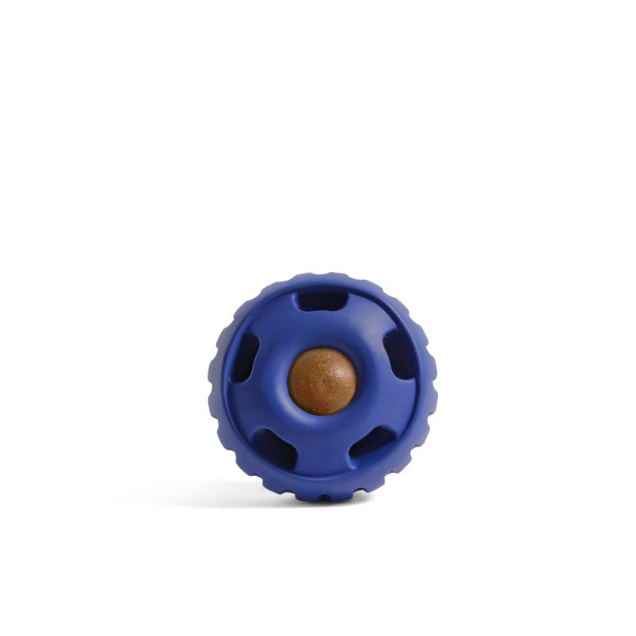
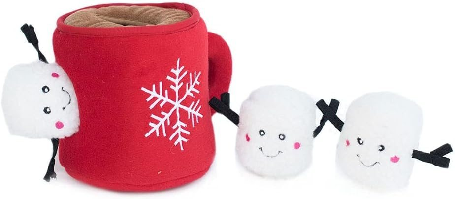
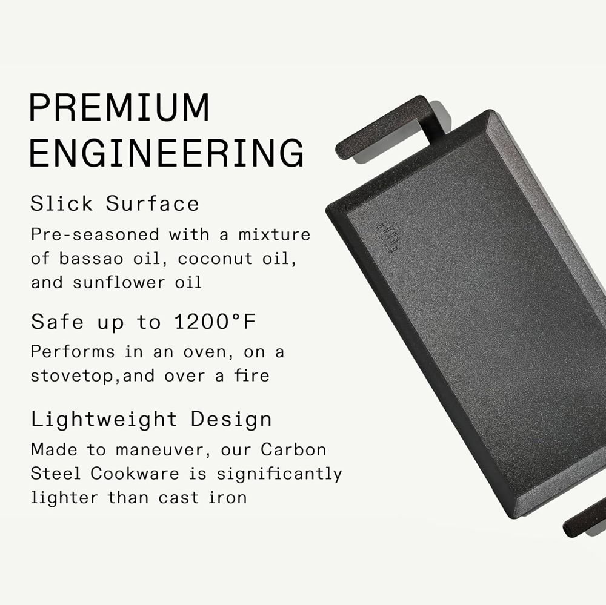
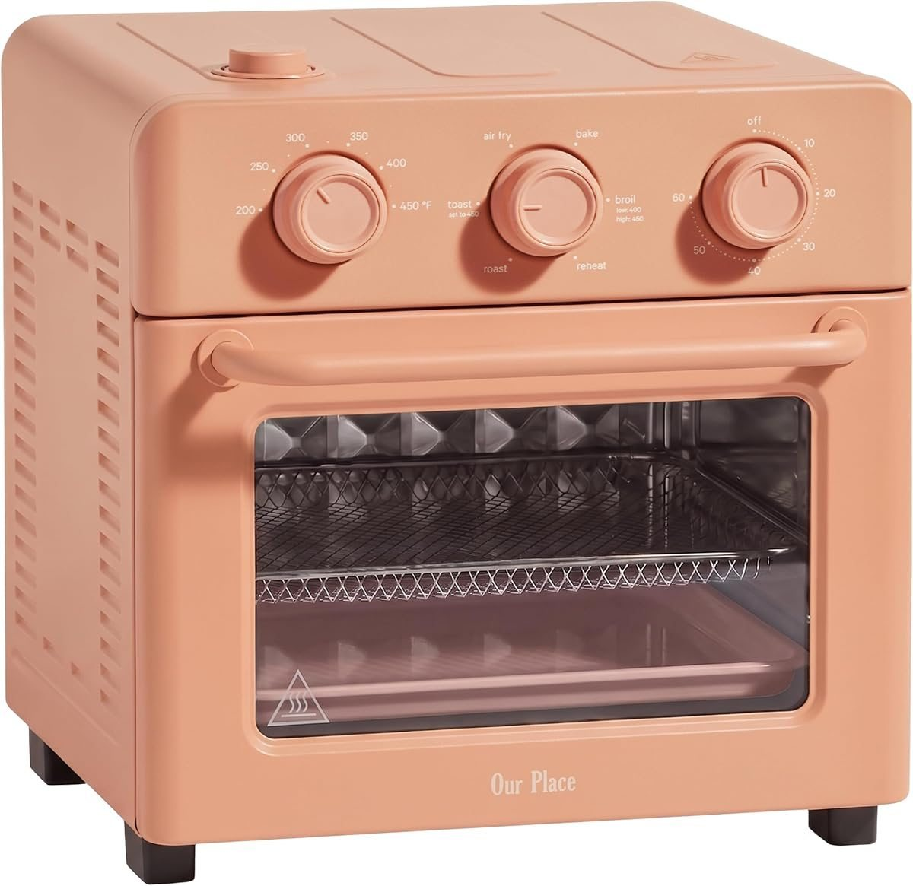
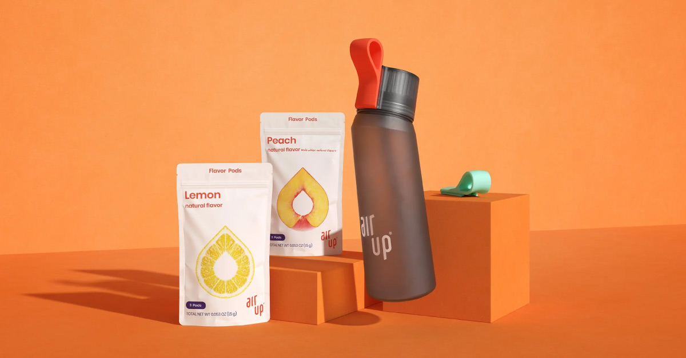

Emotional Support Pals x NFL
Relatable’s new NFL plush football line, 12 team sets. The parent Emotional Support Pals brand already exists. This pick is the football line. See current price on Amazon.
Identified on (2026-11-11)
signal 3/5
Published picks across the shopping categories. FiiO DM13 is under Our misses, replaced in Tech & Gadgets by Sony MDR-3R. Case studies stay in their own filter. Each card’s stage and meter come from the sources in the article. Meters are not forecasts. Read the method before you treat any of this as a sure thing.
Signals are not guarantees. Meters summarize the public sources linked in each article. They are not a forecast.
Holiday gift guides. The same products, sorted as gifts: trending gifts 2026.
Relatable’s new NFL plush football line, 12 team sets. The parent Emotional Support Pals brand already exists. This pick is the football line. See current price on Amazon.
Identified on (2026-11-11)

PlayMonster’s Amazon-exclusive scented marshmallow squishy. The 3-pack kids reach for when NeeDoh is sold out. See current price on Amazon.
Identified on (2026-11-11)

Sony announced the MDR-3R on November 5, 2026, a USB-C revival of the 1979 MDR-3. It replaces FiiO DM13 in this aisle. See current price on Amazon.
Identified on (2026-11-10)

Saie’s baked eyeshadow singles launched August 18, 2026. Bellini, a rose-gold shimmer with Hannah Chody, sold out within hours on October 15.
Identified on (2026-11-10)

Case study: NeeDoh went mainstream in early 2026, months before we listed it. Kept as an honest lesson in being too late.
Identified on (2026-11-04)

Dreams USA Smiski Living Series, a glow-in-the-dark blind box. Quartz groups it with the calmer collectibles after Labubu.
Identified on (2026-10-28)

Eight mystery animal habitats on the MGA shop, listed as a new Miniverse bestseller. No independent sell-out figure. See current price on Amazon.
Identified on (2026-10-28)

A 2-pack, with Pinterest searches cited up more than 40% in a month and about 4,600 TikTok posts. See current price on Amazon.
Identified on (2026-10-28)

Crocs badges this platform toe-loop sandal TikTok Viral and lists it, with 619 ratings on the product page. See current price on Amazon.
Identified on (2026-10-28)

Summer Fridays Lip Butter Balm in Vanilla. The tube shows an Allure Best of Beauty 2024 seal, and the Amazon listing has on the order of 11,000 ratings.
Identified on (2026-10-28)

Café hojicha lattes, including an iced one at The Coffee Bean & Tea Leaf, after searches for the drink were cited up 173%.
Identified on (2026-10-28)

Fishwife’s Tinned Fish Forever 4-pack on Amazon. The photo is the anchovy tin from that set.
Identified on (2026-10-28)
Beth Brower’s self-published journals, picked up by Bloomsbury through volume 8, with volume 9 signed. The BookTok mention is a shop blog.
Identified on (2026-10-28)
Varsha Bajaj’s May 2026 middle-grade Roar, on Bookshop. The page calls it a national bestseller, so this is not a first sighting.
Identified on (2026-10-28)

A palm-sized linear detail sander. Kickstarter opened 20 January 2026; by the June retail launch HOZO said more than $2 million and 14,000 backers. Amazon, sold by HOZO, is in stock.
Identified on (2026-10-31)

The black screen-free Camp Snap on Amazon. Downloadable filters, not the later on-camera Camp Snap 2.
Identified on (2026-10-28)

An in-wall outlet with a color night light. The 19 August 2025 Kickstarter funded in 22 minutes. On 31 October 2026 the brand shop was still out of stock and Amazon, sold by Intecular, was not.
Identified on (2026-10-31)

A WEILAILUX rechargeable mushroom lamp on Amazon. The viral marble HomeGoods lamp is a different product.
Identified on (2026-10-28)

Selkirk AMPED Control Invikta, on Amazon. A current paddle, not a first-year fad, and not the PUMA HYROX Elite 4. See current price on Amazon.
Identified on (2026-10-28)

Bala’s 1 lb bangles. An Allure home-workout roundup already features them. Not a 2026 spike. See current price on Amazon.
Identified on (2026-10-28)

hand2mind’s plush yoga-ball characters sold out on TikTok Shop. Three new characters and a Meijer rollout followed.
Identified on (2026-10-28)

Yoto Mini 4th Gen, announced September 10, 2026. Screen-free is the product description, not a health claim. See current price on Amazon.
Identified on (2026-10-28)

A phone blocker in the phone-free wave. A habit tool only — we make no health claim about it. See current price on Amazon.
Identified on (2026-10-28)

Loop Quiet 2 earplugs. WIRED’s March 2026 guide picks them for sleep. Already widely reviewed, so the stage is Mid. See current price on Amazon.
Identified on (2026-10-28)

Woof’s refillable Pupsicle, with search lifts cited in 2026 pet trends and a TikTok Shop reviews page. No sell-out figure attached.
Identified on (2026-10-28)

ZippyPaws Burrow Hot Cocoa, a mug toy with three marshmallow minis, on Amazon. The pickle plush had no verified Amazon page.
Identified on (2026-10-28)

Made In carbon steel griddle set on Amazon. A known cookware brand, and a listing that still has only a couple of ratings.
Identified on (2026-10-28)

Our Place Wonder Oven on Amazon. A compact air fryer and toaster oven. Not Fellow’s Opus 2.
Identified on (2026-10-28)
Collector scarcity on the Exciting Macaron charm, then minute-long restocks after Lisa’s April 2024 posts. The 2025 celebrity photos are the late part.
Case study · retrospective

The first 80,000 starter sets were gone in about six to eight weeks in 2019. US TikTok write-ups and Hollywood investor names are a 2022 story.
Case study · retrospective
We move a late pick here once we’ve found a genuinely early replacement in its aisle. FiiO DM13 was replaced by Sony MDR-3R.

Every pick is dated from the first clear sign it was taking off, and labelled. Early means we caught it soon after the first signals. Rising means it is clearly growing, but no longer brand new. Mainstream – not an early pick means we got there too late, and we say so. Some cards still say Early–mid or Mid for a pick that is moving but not brand new.
We watch a mix of search, social, community and retail signals, weighted for the category. The approach is in How we spot trends.